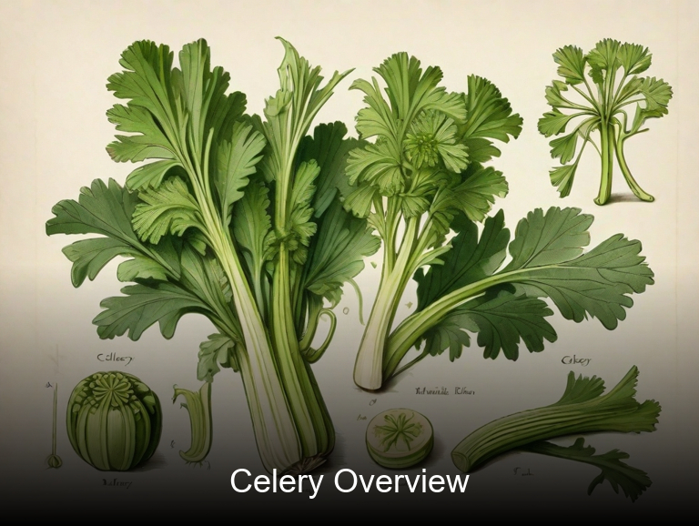

What To Know Before Using Celery (Apium Graveolens)

Celery, scientifically known as Apium graveolens, is a versatile plant with both medicinal and culinary uses. Its crunchy stalks and aromatic leaves have been used in cooking for centuries, providing a fresh flavor to soups, salads, and stews. Celery is also rich in nutrients such as vitamin K, potassium, folate, and antioxidants, making it a healthy addition to any diet. Furthermore, celery has been traditionally used for its medicinal properties, particularly as a natural diuretic to relieve water retention and promote urination. Its essential oils have also been utilized in aromatherapy for their calming and soothing effects on the mind.
In addition to its culinary and medicinal uses, celery is a popular ornamental plant in gardens due to its attractive appearance. Its feathery leaves and tall, slender stalks create an elegant focal point in flower beds and borders. The plant can be grown in various soil types and climates, making it an ideal choice for both beginner and experienced gardeners alike. When grown as an ornamental plant, celery can be used to add texture and height to mixed borders, while its bright green foliage provides a striking contrast against darker plants.
Celery has a rich botanical history, dating back thousands of years. It is believed to have originated in the Mediterranean region, where it was cultivated by ancient civilizations for both food and medicine. Over time, celery spread throughout Europe and Asia, becoming an essential ingredient in numerous cultural cuisines. Today, celery remains a popular plant across the globe, valued not only for its culinary versatility but also for its ornamental beauty and medicinal properties.
In this article, you will discover what are the medicinal and culinary uses of celery. Then, you'll learn how to cultivate it, what is its botanical profile, and how it was used historically.
What Are The Medicinal Uses Of Celery?
Celery (Apium graveolens) has long been used as a medicinal plant due to its numerous health benefits and medicinal properties. This herb helps alleviate various health conditions such as digestive issues, skin problems, respiratory issues, blood pressure, and kidney disorders. It also supports heart health, boosts immunity, reduces inflammation, and promotes weight loss.
The following illustration lists the most important uses of celery in medicine.

The medicinal constituents of celery include flavonoids (luteolin and quercetin), polysaccharides (glucosides and rhamnosides), vitamins (A, C, K, B6), minerals (iron, magnesium, potassium), and enzymes (beta-sitosterol and celery steroids). These compounds work together to provide the health benefits of this herb.
The most commonly used parts of celery are its leaves, stems, and roots. The leaves are often used in teas or supplements, while the stems can be eaten raw or cooked like vegetables. Celery juice is also a popular medicinal preparation that is known for its numerous health benefits.
While celery is generally considered safe, it can cause adverse effects in some individuals. These include allergic reactions (itchy throat, sneezing), diarrhea, and gas when consumed in excess. Celery may also interact with blood-thinning medications such as warfarin. It is always advisable to consult a healthcare professional before using celery for medicinal purposes.
To ensure the safety and efficacy of celery, it is important to follow certain precautions. Firstly, individuals with a history of allergies should avoid consuming celery or its products. Secondly, pregnant women should only use celery in moderation as there is limited research on its effects during pregnancy. Lastly, celery should be stored properly and consumed within a few days to ensure maximum potency.
What Are The Culinary Uses Of Celery?
Celery is a versatile vegetable that can be used in many dishes, from salads to soups. It is commonly used in cold cuts and sushi rolls. Celery is also a popular snack, often served with peanut butter or hummus dip. Its crunchy texture and slightly sweet taste make it a great addition to any dish.
The following illustration lists the most common uses of celery for culinary purposes.

Celery has a mild, slightly sweet flavor that pairs well with many other flavors. It is often used as a base for sauces, dressings, and marinades. The taste of celery can be enhanced by adding spices such as cumin, coriander, or mustard seeds. It also pairs well with acidic ingredients such as lemon juice or vinegar.
Celery is a low-calorie vegetable that is high in fiber and vitamins. The edible parts of celery include the stalks, leaves, and roots. The stalks are the most commonly used part of the vegetable, but the leaves and roots can also be eaten raw or cooked. Celery is often served as a snack or added to salads and soups.
When cooking with celery, it's important to note that it should be washed thoroughly before use. The leaves and roots should also be removed before cutting into pieces. Celery can be used raw or cooked, but it is best eaten within a few days of purchasing. It can also be stored in the fridge for up to a week.
While celery is generally safe to eat, it can cause side effects and toxicity in some cases. Consuming large amounts of celery can lead to celery poisoning, which can cause symptoms such as nausea, vomiting, abdominal pain, and diarrhea. In severe cases, it can also cause allergic reactions or anaphylaxis. It is also important to note that pregnant women and young children should avoid eating raw celery due to the risk of listeria infection.
How To Cultivate Celery In Your Garden?
Celery is an annual horticultural crop that prefers loose, well-drained soil with a pH of 6.0 to 7.0. Plant seeds 1/4 inch deep and 2 inches apart, spaced about 2 feet apart in rows. Thin to 18 inches between plants after germination. Mulch around the base of plants to conserve moisture and suppress weeds. Water thoroughly and regularly, especially during dry weather. Harvest when stalks are at least 20 inches tall.
The following illustration lists the most important tips to cutlitvate celery.

Ideal growing conditions for celery include full sun exposure, high humidity, and moderate temperatures. Celery thrives in warm, moist environments with a temperature range of 65 to 75 degrees Fahrenheit. Avoid direct sunlight on the foliage during the hottest part of the day, as this can cause the leaves to wilt. Provide adequate air circulation by pruning away lower branches and tying up the main stalks.
Maintenance of celery involves regular watering, fertilizing, and weeding. Mulching is crucial in conserving moisture and suppressing weeds. Celery is susceptible to pests such as aphids, whiteflies, and slugs. Use insecticidal soap or neem oil to control these pests. Harvesting should be done carefully to avoid damaging the plants. Cut the stalks at the base using a sharp knife or scissors.
What Is The Botanical Profile Of Celery?
Celery (Apium graveolens) belongs to the kingdom Plantae, phylum Tracheophyta, class Magnoliopsida (or Dicotyledones), order Apiales, family Apiaceae (or Umbelliferae), and genus Apium. Common names include Celeriac and Smallage.
The following illustration display the botanical profile of celery.

There are several cultivars of celery, including Pascal, Utmost, Golden Self-Blanching, Red Venture, Tango, and Vantage. These variants differ in their color, size, and blanching ability. Some varieties are also used as a root vegetable, such as celeriac.
Celery is a biennial herb with a long, thick stalk that can grow up to two feet tall. The leaves of celery are dark green and feathery. It has small white flowers that bloom in an umbrella-like shape. The root of celeriac, another variety of celery, is large, bulbous, and edible.
Celery is native to the Mediterranean region but is now widely cultivated around the world. It can grow in a variety of climates, from cool, moist areas to warm, dry regions. It prefers well-drained soil and full sun or partial shade.
Celery has a unique life cycle. It starts as a seed that germinates in the soil. The plant then grows leaves and stalks and forms flowers at the end of its first year. If left to grow, it will produce seeds and die after two years. However, if grown for food, it is typically harvested before flowering.
What Are The Historical Uses Of Celery?
Celery, Apium graveolens, has a long history of traditional use in medicine. Its roots have been used for centuries to treat various ailments, including digestive issues and skin conditions. Celery was also believed to promote overall health and vitality, making it a popular choice among ancient healers.
The following illustration lists the most well known historical uses of celery.

In divination, celery has been used for thousands of years to predict the future. In ancient times, it was often tied in knots and then buried underground. The position of the celery after a few days would be used to interpret its meaning. Some believed that the position of the celery could reveal information about one's destiny or the future of their loved ones.
Celery has also been the subject of many legends throughout history. In ancient Greece, it was said that Alexander the Great ate celery every day as a way to maintain his strength and endurance during battle. According to some legends, the first use of celery in cooking dates back to the time of Cleopatra VII, who used it to flavor her dishes. Despite its many uses, however, celery remains a humble vegetable that is often overlooked for its true potential.